Dakdekker in Ede en omstreken
Dakwerk dat staat als een huis.
Lekkage, een nieuw pannendak, een dakkapel of zinkwerk: Pakro Dakspecialist pakt alles aan uw dak aan. En bij calamiteiten belt u ons dag en nacht.
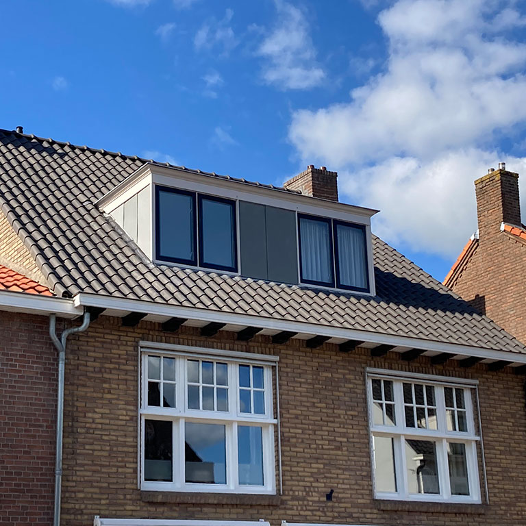
Lekt het? Wacht dan niet.
Schade of lekkage direct verhelpen voorkomt een hoop financiële narigheid en alle andere ellende die water kan veroorzaken. Voor calamiteiten zijn wij 24/7 bereikbaar.
"Lekkage dakkapel, lood en voegen zien er weer strak uit! Komt afspraken na, nette prijs! Top service."
Van de nok tot de regenpijp.
Alle werkzaamheden aan uw dak, gevel en wanden. Voor renovatie en nieuwbouw, van een woning tot een schuur of garage. Kijk waar het bij u om gaat.
- 1
Pannendak
Dakpannen leggen of oude pannen vervangen. Inclusief de ondergrond, want ligt die niet goed, dan gaan de pannen schuiven.
- 2
Dakkapel en dakramen
Wij bouwen de dakkapel en plaatsen dakramen.
- 3
Lood, koper en zink
Al het lood-, koper- en zinkwerk, bijvoorbeeld bij de schoorsteen of langs de muur.
- 4
Dakgoten
Zinken goten vernieuwen en onderhouden, en een lekkende goot verhelpen.
- 5
Hemelwaterafvoer
De afvoer die het water van uw dak weghaalt.
- 6
Boeibekleding
Nieuwe bekleding langs de dakrand.
- 7
Gevelbekleding
Planksystemen voor horizontale en verticale gevels, met een eigen schaduwvoeg.
- 8
Isolatie
Dakisolatie verzorgen wij zelf, gevelisolatie samen met onze partner. U kunt daar subsidie voor aanvragen.
Verder: platte daken en schuine daken, dakbedekking vervangen, stormschade herstellen, periodiek onderhoud en uw dak voorbereiden op zonnepanelen. Wij monteren pannendaken, planksystemen, losanges, roeven, felssystemen en lood.
Het werk van dichtbij.
Geen plaatjes van ver weg, maar de naden, het lood en de aansluitingen.
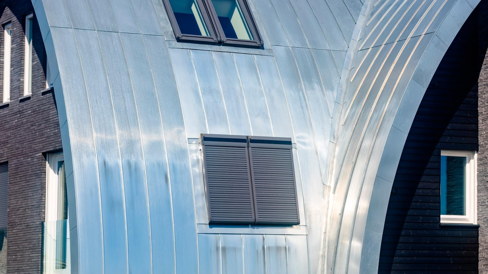
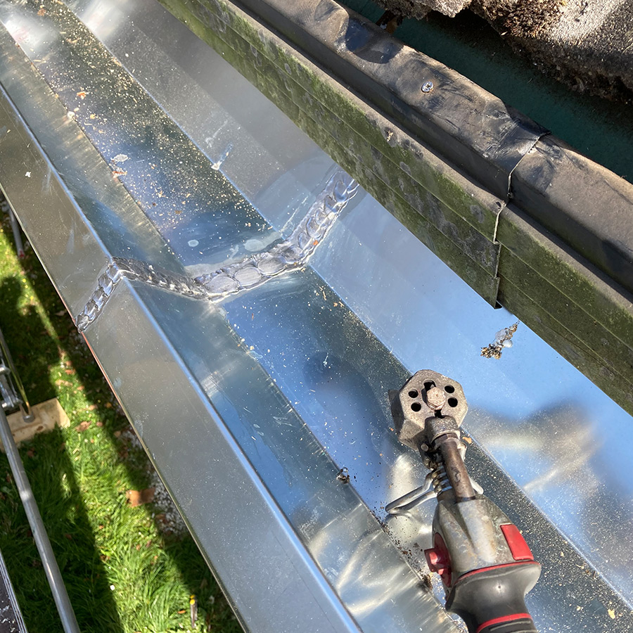
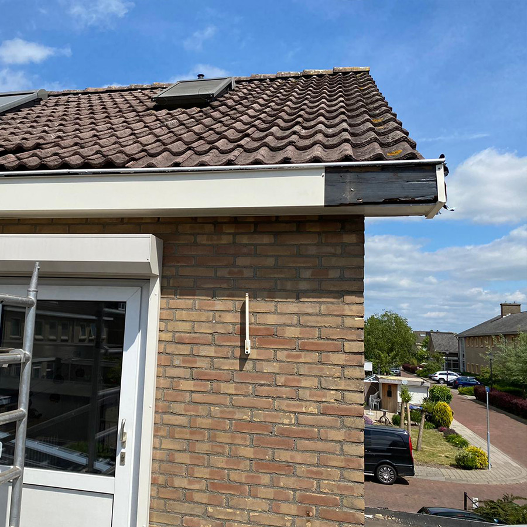
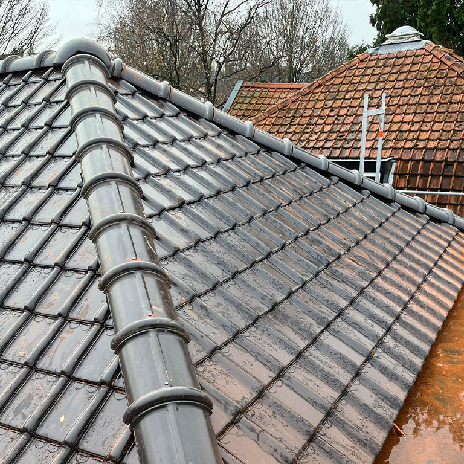
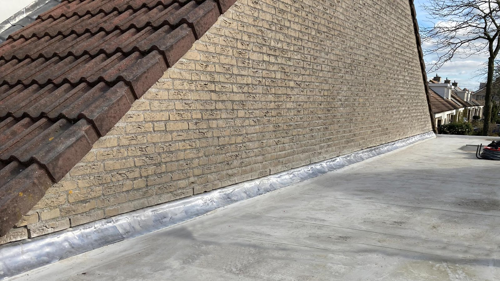
Wat gebeurt er allemaal op het dak?
Bij een dakrenovatie gaat alles eraf en bouwen we het dak opnieuw op. Dit is de volgorde.
-
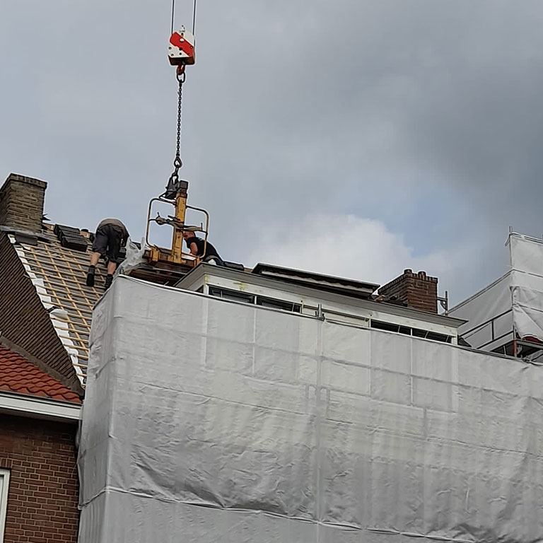
1. Eraf
We verwijderen de volledige dakbedekking, tot alleen het kale dak overblijft.
-
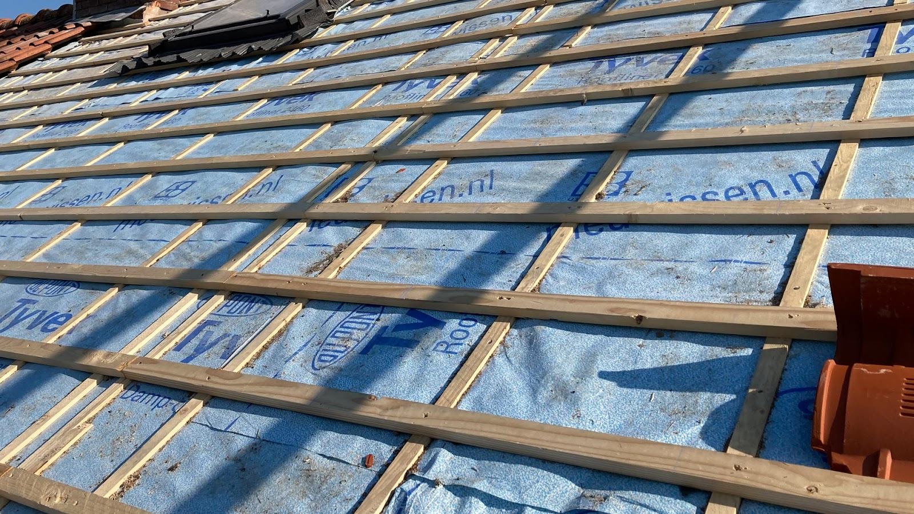
2. Isoleren en latten
Waar nodig plaatsen we dakisolatie (vraag ons gerust wat bij u past). Dan volgen de pannenlatten.
-
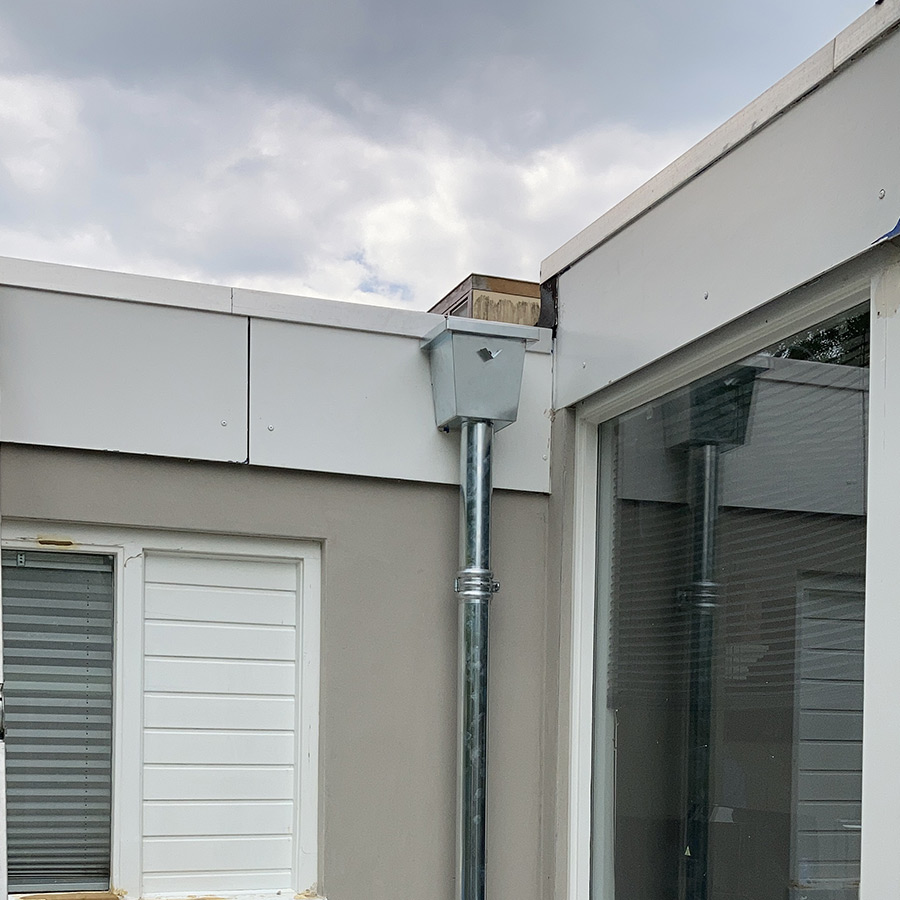
3. Goten en lood
De goten gaan erop en het lood komt op zijn plek, bijvoorbeeld bij de schoorsteen.
-
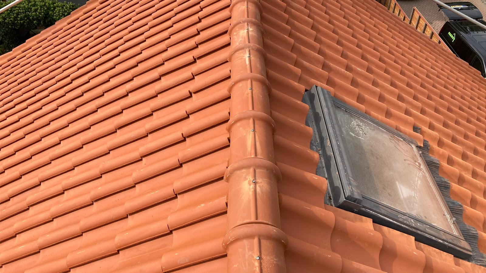
4. Pannen erop
Tot slot de pannen. Als dat nodig is, bereiden we het dak voor op zonnepanelen.
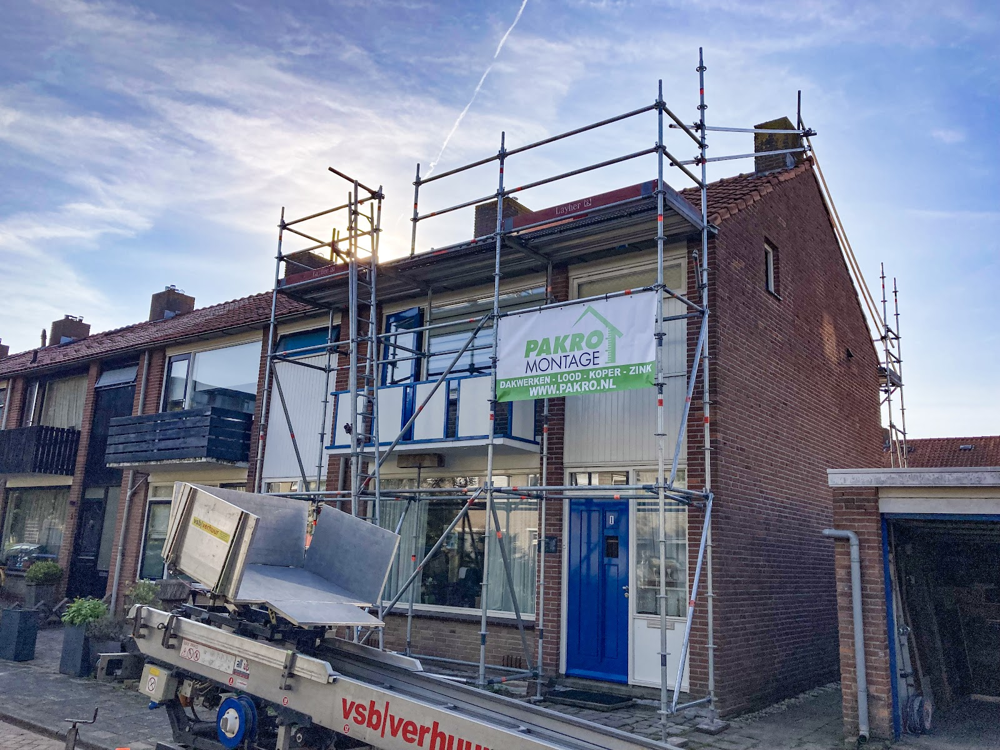
Tien jaar garantie, op papier.
Op vrijwel alle werkzaamheden geven wij 10 jaar garantie, met ons certificaat erbij. Op alle geleverde artikelen krijgt u de maximale garantie, tot 40 jaar.
- Wij werken volgens ISO-certificering en zijn een gecertificeerd dakmontagebedrijf.
- Wij leveren op tijd en binnen budget, zonder verrassingen achteraf.
- Wij werken samen met VDL Totaalbouw.
Pakro Dakspecialist is VCA-gecertificeerd.
Een groen dak, met gewone pannen.
Sedumdakpannen zijn dakpannen met een laag sedumbeplanting, en een van onze specialiteiten. U krijgt betere isolatie, minder geluid van buiten, een langere levensduur van het dak en regenwater dat minder snel in het riool belandt.
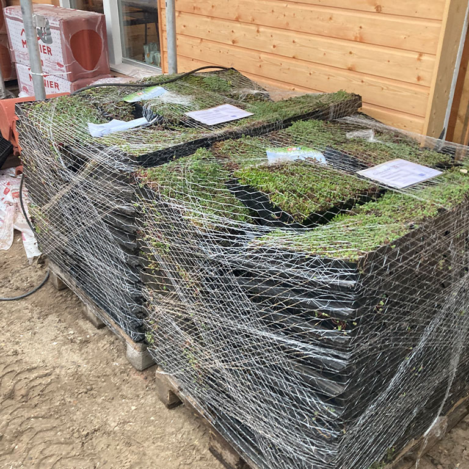
Een eerlijk advies, waar u verder mee komt.
- Hoe oud is het dak?
- Voldoet de isolatie nog aan de normen van vandaag?
- Kunnen er zonder meer zonnepanelen op?
Vraag het ons, of vraag vrijblijvend een prijs aan.
- Bellen
- 06 42 71 64 62
- Mailen
- info@pakro-dakspecialist.nl
- Adres
- Kampstraat 22
6711 BS Ede - Openingstijden
- Maandag t/m zondag:
24 uur geopend